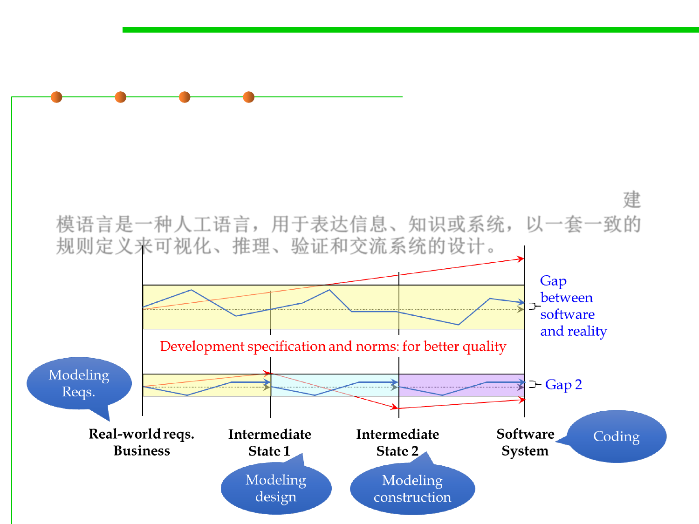

2.2 Process, Systems, and Tools of Software Construction
(2) Modeling languages and tools
http://modeling-languages.com
▪ A modeling language is any artificial language that can be used to
express information or knowledge or systems in a structure that is
defined by a consistent set of rules, with the objective of visualizing,
reasoning, verifying and communicating the design of a system.建
模语言是一种人工语言，用于表达信息、知识或系统，以一套一致的
规则定义来可视化、推理、验证和交流系统的设计。